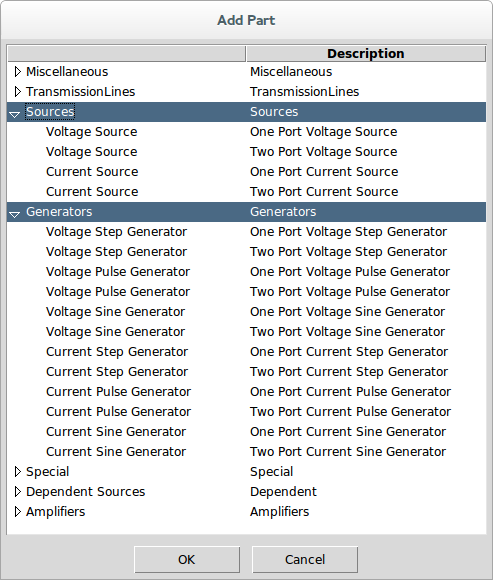

Prev
Drawing a Schematic for Simulation
Up
Simulation
Output Probes for Simulation
Next
Sources and Generators
Sources and generators supply stimulus to the circuit in the form of an input
Waveform↓
.
They are added to the schematic by invoking
Add Part↓
and selecting parts from the Sources and Generators categories in the Part Picker Dialog:

Here is a list of parts and links to the parts that qualify as sources and generators:
Sources:
Voltage Source↓
Current Source↓
Generators:
Voltage Step Generator↓
Voltage Pulse Generator↓
Voltage Sine Generator↓
Current Step Generator↓
Current Pulse Generator↓
Current Sine Generator↓
Prev
Drawing a Schematic for Simulation
Up
Simulation
Output Probes for Simulation
Next